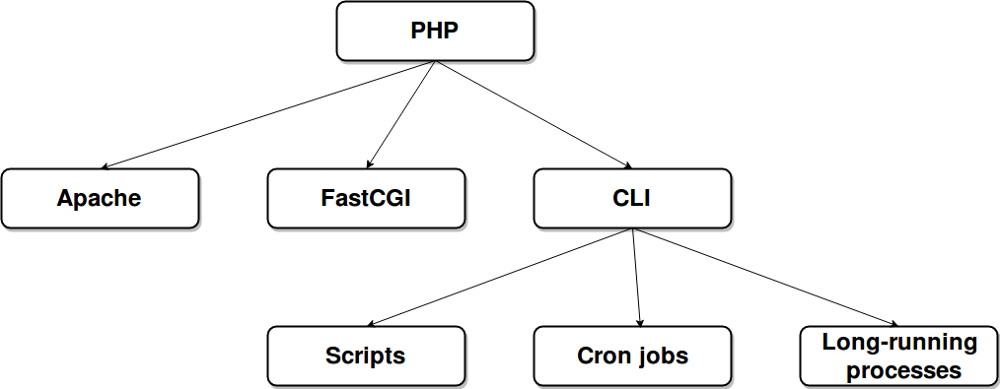

Long-running PHP processes
Giorgio Sironi
If you are looking at these slides on your pc, there are speaker notes in the HTML
- Software Engineer in Test (automates stuff for a living)
- What do I do
- Distributed systems
- Automated complex tests, integrating many different projects
- Continuous Delivery
- Pasta and risotto
(Main) PHP SAPIs

Differentiation
| CLI category |
Running time |
STDIN |
STDOUT |
| Script |
seconds, minutes |
sometimes |
always |
| Cron |
seconds (best), minutes |
no |
no |
| Long-running process |
minutes, hours, days |
no |
no |
Quick examples
- RabbitMQ/ZeroMQ/SQS consumer
- Gearman worker
- Database projection generator
Essential characteristics
- runs for hours, and it's supposed to
- instantiated multiple times for parallelism
- child of a daemon instead of a web server
PHP?!
Not exactly built for this (non-exhaustive list)
- multiprocess is not memory efficient
- no standard supervision system or framework
- not much fault tolerance (Fatal Error)
PHP!
- your application is already written with it
- you use libraries written in PHP (open source and private)
- deployment tooling is already in place
- you know the language
- ability to move existing functionality into the background
Minimal structure
#!/usr/bin/env php
require_once 'bootstrap.php';
while (!$shouldStop()) {
$item = $blockingCall($timeout = 20);
$doWork($item);
$commit($item);
}
Problems: supervising (1)
- Is the process still alive?
- If it's crashed, we should restart it
- There's a
Class 'X' not found, we should stop restarting it
Problems: supervising (2)
- Supervisord (everywhere)
- Upstart (e.g. Ubuntu 14.04)
- Systemd (e.g. Ubuntu 16.04)
Problems: stopping
$flag = false;
pcntl_signal('SIGTERM', function () use (&$flag) {
$flag = true;
});
$shouldStop = function() use (&$flag) {
pcntl_signal_dispatch();
return $flag;
}
Problems: memory
# php.ini memory_limit = -1
$shouldStop = function() use ($maximum) {
return memory_get_usage(true) > $maximum;
}
Conclusions
- PHP long-running processes work well if you carefully work on the operations, not just development
- Know your limits: performance and efficiency
- Cohesion and simplicity of your application win over technological terror